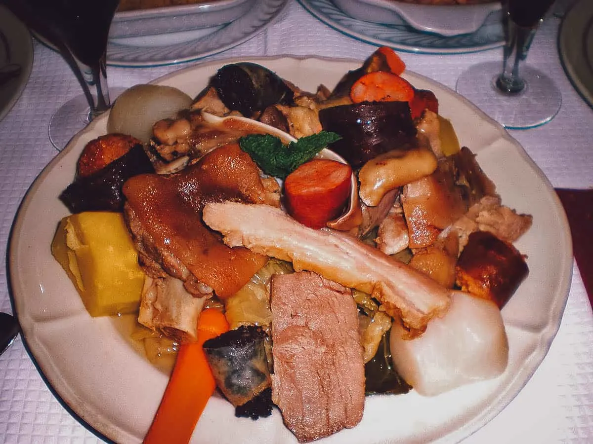

Cozido Portuguesa

Cozido à Portuguesa is a delightful Portuguese dish that
embodies the essence of communal feasting and culinary diversity.
This hearty stew showcases an array of meats and vegetables, simmered
together to create a symphony of flavors.
Ingredients
- 600g beef cut into big cubes
- 600g pork ribs
- 100g chorizo
- 100g farinheira (Portuguese flour sausage)
- 100g morcela (Portuguese blood sausage)
- 100g whole bacon
- 1 large onion roughly chopped
- 2 medium carrots cut in thick slices
- 2 medium turnips roughly chopped
- 3 minced garlic cloves
- 3tbsp olive oil
- 2 bay leaves
- Salt
- Black pepper
Instructions
-
Start by seasoning the beef, and pork ribs with salt and pepper.
Let it sit in room temperature for about 30 minutes.
-
Place a large pan over medium to hot heat. Once hot, add the olive oil.
Sear the piece of bacon on both sides. Reserve.
-
Sear the beef on both sides, for about 2 minutes each side.
Do it in small batches to avoid losing heat.
Repeat the process with the pork ribs.
-
Bring the onions to the pot, reduce the heat, then lightly fry them for about 5 minutes.
Add the garlic and fry it for a minute or two.
-
Deglaze the bottom of the pan with a splash of water.
-
Return the meats to the pot. Add the cured sausages whole.
Then add the bay leaves. Add water until it covers the meat
Bring it to a boil. Then reduce the heat to low.
-
Now we let everything simmer for about 1h30m before adding the vegies.
We need to remove the cured sausages before, as they take less time to cook.
The farinheira is the first to finish cooking, about 10 to 15 minutes.
Remove it from the pan and set aside. Next it will be the morcela, then the chorizo,
about 30 minutes. You can always leave the chorizo for longer for a stronger smoked flavour.
You can skim the fat from the surface of the stew every so often.
-
Once both the beef and pork ribs are very soft, it’s time to add the carrots and turnips.
And to slice the sausages, and bacon piece we set aside earlier, then put them back in the stew.
If you plan to serve it with rice, now it’s the time to remove some of the stock
and use it to cook some rice (our favourite ratio is 1 part rice 2 parts stock).
Add more water to the stew if necessary (the aim is to have a stew with more liquid than usual)
-
Once the vegetables are fork tender, tear the cabbage leaves with your hands,
and add them to the pot.
-
Let everything simmer for another ten minutes before serving it.
You can add more salt and pepper if needed. Some people like to
separate the broth from the meat and vegetables before serving.
We prefer serving everything together.